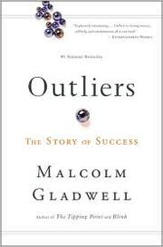
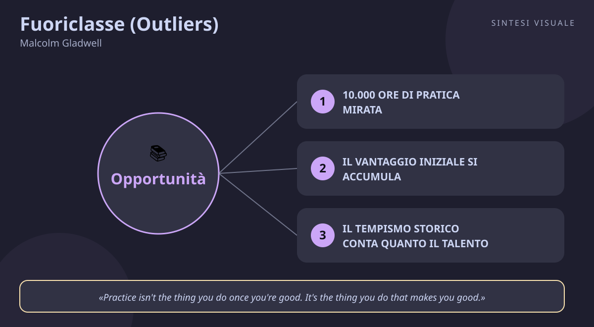

Home / Libri / Fuoriclasse (Outliers)

Fuoriclasse (Outliers)
Malcolm Gladwell · Successo
«Fuoriclasse (Outliers)»
- 10.000 ore
- Vantaggio cumulativo
- Tempismo storico
- Cultura ereditata
🧭Introduzione
Malcolm Gladwell — giornalista inglese cresciuto in Canada, editorialista del New Yorker dal 1996, autore di bestseller mondiali come The Tipping Point e Blink — è il narratore che trasforma la ricerca scientifica in storie che non dimentichi. La domanda che lo tormenta in questo libro è semplice e scomoda: perché crediamo che i fuoriclasse — Gates, i Beatles, Mozart, i campioni di hockey — ce l'abbiano fatta da soli, con il solo talento e la sola forza di volontà?
Perché questo libro conta oggi: viviamo nell'epoca del mito del "self-made man" e del talento innato: se non sfondi, è colpa tua. Il successo non è mai solo una storia individuale: è il prodotto di pratica, opportunità, tempismo e cultura. È utile a chi fa carriera, a chi vende, a chi studia, a chi educa figli o collaboratori — e a chiunque voglia smettere di colpevolizzarsi e iniziare a costruire le condizioni giuste per riuscire.
📘Riassunto
La scintilla centrale: il successo straordinario non nasce dal talento da solo, ma dall'incontro tra tantissima pratica mirata e circostanze fortunate — mese di nascita, epoca storica, famiglia, cultura — che quasi nessuno controlla, ma che tutti possono imparare a riconoscere e sfruttare.
La struttura logica procede per storie-indagine: si parte dall'hockey canadese (quasi tutti i campioni nascono nei primi mesi dell'anno, per il taglio anagrafico del 1° gennaio); si passa alla regola delle 10.000 ore (Beatles ad Amburgo, Bill Gates al computer della scuola, Mozart); si scopre la soglia dell'intelligenza (oltre un certo QI conta altro: il caso di Christopher Langan contro Robert Oppenheimer); si attraversa il tempismo generazionale (i miliardari del software nati intorno al 1955); si arriva alla cultura che ereditiamo (il disastro del volo Korean Air 801 e la distanza gerarchica; i coltivatori di riso e la bravura in matematica); si chiude con la scuola KIPP nel Bronx, dove il successo si costruisce con più ore di lavoro vero.
Il punto di svolta è il rovesciamento del mito del merito puro: non sono i più brillanti a riuscire, ma quelli a cui sono state date opportunità — e che hanno avuto la forza e la presenza di spirito di coglierle. Il talento è necessario ma non basta: senza le ore di pratica e senza il contesto giusto, resta lettera morta.
L'eredità oggi: numero uno nella classifica del New York Times per undici settimane consecutive all'uscita, centinaia di settimane in classifica con l'edizione economica, milioni di copie nel mondo. La "regola delle 10.000 ore" è entrata nel linguaggio comune — citata, discussa e criticata dagli stessi ricercatori che l'hanno ispirata (Anders Ericsson) — e ha cambiato il modo in cui scuole, aziende e allenatori pensano allenamento, selezione e merito.
💡Concetti chiave
- 10.000 ore di pratica mirata — il talento avvia, ma è la pratica corretta e prolungata a rendere eccellenti.
- Il vantaggio iniziale si accumula — nascere nel mese "giusto" apre porte che si allargano da sole (effetto Matteo).
- Il tempismo storico conta quanto il talento — essere pronti quando l'onda arriva vale più che remare da soli.
- Oltre una soglia, il QI non decide — a fare la differenza sono le abilità pratiche: chiedere, negoziare, farsi aiutare.
- La cultura ereditata guida le mani — ciò che i nostri avi facevano e dicevano influenza ancora aerei, conti e negoziati.
- Le opportunità si riconoscono e si costruiscono — il successo si progetta creando contesti ricchi di ore buone.
📖1. 10.000 ore di pratica mirata
- Definizione Gladwell, basandosi sugli studi di Anders Ericsson sui violinisti di Berlino, sostiene che per raggiungere un livello mondiale in un campo servono circa 10.000 ore di pratica corretta — grosso modo vent'ore a settimana per dieci anni. I Beatles le accumularono suonando oltre 1.200 concerti ad Amburgo tra il 1960 e il 1964; Bill Gates le accumulò programmando da tredicenne grazie al raro computer della sua scuola.
- Esempio due venditori con lo stesso talento naturale: uno fa qualche telefonata a settimana, l'altro registra ogni chiamata, la rivede, corregge l'apertura e ripete. Dopo due anni il secondo sembra "nato per vendere" — in realtà ha solo accumulato le sue ore di pratica deliberata.
- Come applicarlo scegli UNA abilità (presentazioni, trattative, un software, una lingua); blocca 5 ore a settimana di pratica con feedback (un mentore, una registrazione, un collega che corregge); tieni un diario delle ore e di un errore corretto per sessione.
- Errore comune confondere le ore di presenza con la pratica — stare dieci anni in un ruolo senza mai uscire dalla zona di comfort non produce eccellenza; conta la pratica che corregge, non la ripetizione che conferma.
- Collegamento Carol Dweck (Mindset, già trattato): la mentalità di crescita è il motore che rende sopportabili le 10.000 ore; Angela Duckworth (Grit, già trattata): passione e perseveranza sono il carburante della pratica lunga; Cal Newport (Deep Work, già trattato): le ore devono essere profonde, non distratte.
📖2. Il vantaggio iniziale si accumula
- Definizione nell'hockey giovanile canadese il taglio anagrafico è il 1° gennaio: un bambino nato a gennaio è quasi un anno più maturo di uno nato a dicembre. I più grandi vengono selezionati, ricevono migliori allenatori e più partite — e il piccolo divario iniziale diventa un abisso. Gladwell lo chiama l'effetto Matteo: "a chi ha sarà dato".
- Esempio a scuola tuo figlio, nato a fine anno, finisce nel gruppo dei "meno pronti" e riceve meno attenzioni; il compagno nato a inizio anno va nel gruppo avanzato, prende fiducia e compiti più stimolanti. Dopo tre anni la differenza sembra talento — era calendario.
- Come applicarlo quando valuti persone (assunzioni, promozioni, figli), chiediti sempre "sto premiando il talento o un vantaggio di partenza?"; se sei tu in ritardo, cerca contesti dove ricominciare alla pari (un corso nuovo, un mercato nuovo); se selezioni, osserva l'età relativa e la storia delle opportunità ricevute.
- Errore comune credere che ogni classifica rispecchi il merito — promozioni, voti e ingaggi mescolano sempre talento e vantaggi cumulati; ignorarlo fa sprecare talenti tardivi e gonfia i precoci.
- Collegamento Daniel Kahneman (Pensieri lenti e veloci, già trattato): il Sistema 1 scambia un effetto di contesto per una qualità della persona; Richard Thaler (Nudge, già trattato): piccole regole di selezione (come una data di taglio) producono grandi destini senza che nessuno lo decida davvero.
📖3. Il tempismo storico conta quanto il talento
- Definizione i grandi nomi del software — Gates, Jobs e gli altri — nacquero quasi tutti intorno al 1955: abbastanza grandi per cogliere la rivoluzione dei personal computer a metà anni Settanta, abbastanza giovani da non essere già incastrati in un'altra carriera. Stessa logica per i magnati nati negli anni Trenta dell'Ottocento con la rivoluzione industriale. L'onda giusta al momento giusto vale quanto il remo.
- Esempio due programmatori ugualmente bravi: uno nel 2008 impara a fare siti vetrina, l'altro nel 2012 impara le app per smartphone. Il secondo cavalca un mercato che esplode e in cinque anni costruisce un'azienda — non perché fosse più bravo, ma perché la sua preparazione ha incontrato l'onda.
- Come applicarlo una volta all'anno chiediti "quale onda sta montando nel mio settore?" (intelligenza artificiale, sostenibilità, nuove norme, nuovi canali di vendita); investi le tue 10.000 ore future nelle competenze che l'onda richiederà, non in quelle che premia il passato; posizionati dove l'onda passerà.
- Errore comune inseguire ogni moda saltando da un'onda all'altra senza accumulare mai ore vere — il tempismo premia chi è già preparato quando l'onda arriva, non chi si improvvisa surfista all'ultimo minuto.
- Collegamento Simon Sinek (Start with Why, già trattato): chi ha un perché chiaro riconosce prima l'onda giusta; Tim Ferriss (La settimana lavorativa di 4 ore, già trattato): le "muse" migliori nascono dove domanda nascente e competenze rare si incontrano.
📖4. Oltre una soglia, il QI non decide
- Definizione Gladwell mostra che oltre una soglia (circa 120 di QI) altra intelligenza in più non produce altro successo reale. La prova è il confronto tra Christopher Langan — QI altissimo, vita difficile e anonima — e Robert Oppenheimer — brillante ma soprattutto capace di muoversi nel mondo: quando rischiò l'espulsione, seppe farsi difendere, negoziare, ottenere appoggi. Il successo pratico è fatto di abilità sociali apprese in famiglia.
- Esempio in ufficio il collega geniale che non chiede mai aiuto resta bloccato su un problema per una settimana; quello meno brillante ma sfacciato chiede al senior, al cliente e al fornitore, e chiude in due giorni. Il secondo avanza — non per intelligenza, per abilità pratica.
- Come applicarlo allena le tre mosse di Oppenheimer — chiedere aiuto senza vergogna, negoziare scadenze e risorse, costruire alleanze prima di servirtene; prepara per ogni trattativa difficile una frase di richiesta concreta ("mi serve X entro venerdì: come possiamo riuscirci?").
- Errore comune credere che basti essere i più intelligenti della stanza e disprezzare le "politiche" relazionali — nella vita reale chi non sa chiedere e negoziare spreca il proprio QI come un motore senza trasmissione.
- Collegamento Dale Carnegie (Come trattare gli altri e farseli amici, già trattato): l'arte di farsi aiutare è una competenza che si impara; Daniel Goleman (Intelligenza emotiva, già trattato): autoconsapevolezza ed empatia sono il moltiplicatore dell'intelligenza astratta.
📖5. La cultura ereditata guida le mani
- Definizione gli incidenti della Korean Air degli anni Novanta — incluso il volo 801 a Guam nel 1997 — nacquero anche da una cultura ad alta distanza gerarchica: il copilota intuiva il pericolo ma non osava contraddire il comandante. Allo stesso modo, la tradizione risicola asiatica — lavoro instancabile, precisione, pazienza — aiuta a spiegare risultati eccellenti in matematica. La cultura dei nostri nonni vive nelle nostre dita.
- Esempio in riunione nessuno obietta al capo anche se il piano ha un buco evidente; tre mesi dopo il progetto fallisce esattamente su quel buco. Non mancava l'intelligenza — mancava una cultura dove dissentire è lecito e doveroso.
- Come applicarlo nella tua squadra crea riti anti-gerarchia — giro di obiezioni obbligatorio ("dimmi un motivo per cui questo fallirà"), copilota con diritto di veto, decisioni scritte con rischi dichiarati; in famiglia e a scuola, premia chi fa domande scomode invece di punirlo.
- Errore comune pensare "la cultura non mi riguarda, io sono diverso" — gli schemi ereditati agiscono proprio quando siamo sotto stress e stanchi, cioè quando contano di più; solo procedure esplicite li correggono.
- Collegamento Douglas Stone e colleghi (Difficult Conversations, già trattato): separare intenzione e impatto aiuta a dissentire senza distruggere; Nancy Duarte (Resonate, già trattata): le grandi presentazioni funzionano quando il pubblico può obiettare e partecipare invece di subire.
📖6. Le opportunità si riconoscono e si costruiscono
- Definizione la chiusura del libro è la scuola KIPP nel Bronx: ragazzi poveri che riescono perché la scuola offre ciò che le famiglie ricche danno per scontato — molte più ore di lezione, estate compresa, e una cultura dello sforzo. Morale: le opportunità non capitano solo, si progettano, per sé e per gli altri.
- Esempio vuoi imparare a negoziare ma in azienda non capita mai: crei tu l'occasione — chiedi di gestire i piccoli fornitori, fai volontariato in un'associazione dove si tratta ogni giorno, trovi un corso serale. In un anno accumuli le ore che gli altri aspettano da una vita.
- Come applicarlo fai l'inventario delle tue opportunità mancate (accesso a mentori? a strumenti? a tempo?); per ciascuna scrivi una versione "costruibile" entro 30 giorni (un'email a un mentore, un'ora protetta a settimana, un progetto laterale); se guidi altri, regala ore buone: affiancamenti, compiti veri, feedback onesto.
- Errore comune aspettare l'occasione perfetta o lamentarsi di non averla avuta — le opportunità raramente bussano con il nome scritto sopra; si riconoscono solo allenando l'occhio e si moltiplicano offrendole agli altri.
- Collegamento Adam Grant (Give and Take, già trattato): chi dà opportunità agli altri costruisce reti che restituiscono opportunità; James Clear (Atomic Habits, già trattato): un ambiente progettato bene rende le ore buone automatiche invece che eroiche.
💬Citazioni da ricordare
"Practice isn't the thing you do once you're good. It's the thing you do that makes you good." — Conta perché rovescia la logica del talento: non aspetti di essere bravo per esercitarti, ti eserciti per diventare bravo.
"Who we are cannot be separated from where we're from — and when we ignore that fact, planes crash." — Conta perché ricorda che origini e cultura non sono folklore: ignorarle ha conseguenze reali, in cielo come in ufficio.
"Outliers are those who have been given opportunities — and who have had the strength and presence of mind to seize them." — Conta perché è la formula finale del successo: opportunità ricevute più coraggio di afferrarle.
Il successo non è mai solo una storia individuale: è il prodotto di pratica, opportunità, tempismo e cultura. E ancora: non sono i più brillanti a riuscire, ma quelli a cui sono state date opportunità — e che hanno avuto la forza e la presenza di spirito di coglierle. Infine: le ore di pratica contano più del talento di partenza, ma solo se qualcuno — o qualcosa — ti ha messo nelle condizioni di accumularle.
🌍Esempi di oggi
- Il collega "portato" per le lingue — Parla benissimo l'inglese e tutti dicono che ha talento. Poi scopri che da ragazzo ha passato tre estati a lavorare in un ostello per stranieri: migliaia di ore di pratica vera. Non era dono, era Amburgo personale.
- La promozione mancata del trentenne — Bravo quanto il collega promosso, ma entrato in azienda due anni dopo, nel reparto sbagliato, con il capo sbagliato. Il divario sembra merito, ma è accumulo di piccoli vantaggi — e si recupera cambiando contesto, non rassegnandosi.
- La riunione dove nessuno contraddice il capo — Tutti vedono il rischio nel piano, nessuno lo dice per rispetto gerarchico. È la cabina di pilotaggio del volo 801 in miniatura: serve un rito esplicito che dia a ognuno il permesso — anzi il dovere — di parlare.
🛠️Azioni pratiche
- Avvia il contatore delle 10.000 ore: scegli un'abilità decisiva e blocca in agenda 5 ore di pratica con feedback entro i prossimi 7 giorni (una registrazione rivista, un mentore consultato, un esercizio corretto). Segna ore ed errore corretto su un foglio.
- Fai la mappa delle tue onde: scrivi le tre tendenze che stanno montando nel tuo settore e una competenza che ciascuna richiederà tra due anni; scegli la più promettente e prenota il primo passo concreto (un corso, un libro, una telefonata a chi quell'onda la cavalca già).
- Crea un rito anti-gerarchia: nella prossima riunione o cena di famiglia che guidano decisioni, imponi un giro di obiezioni ("un motivo per cui potrebbe fallire") prima di decidere — e premia ad alta voce la migliore obiezione arrivata.
💎Da portare a casa
Il talento ti fa iniziare, ma sono pratica, tempismo e contesto a farti arrivare: costruiscili invece di invidiarli.
Vuoi approfondire? Rispondi in chat con il numero del concetto (1–6) che vuoi esplorare — 10.000 ore, vantaggio cumulativo, tempismo storico, soglia del QI, cultura ereditata o costruire opportunità — oppure chiedimi come applicare le idee di Gladwell a una tua situazione reale: carriera, vendite, studio, public speaking o educazione di figli e collaboratori.
🖼️In un colpo d’occhio

Tocca l’immagine per ingrandirla.